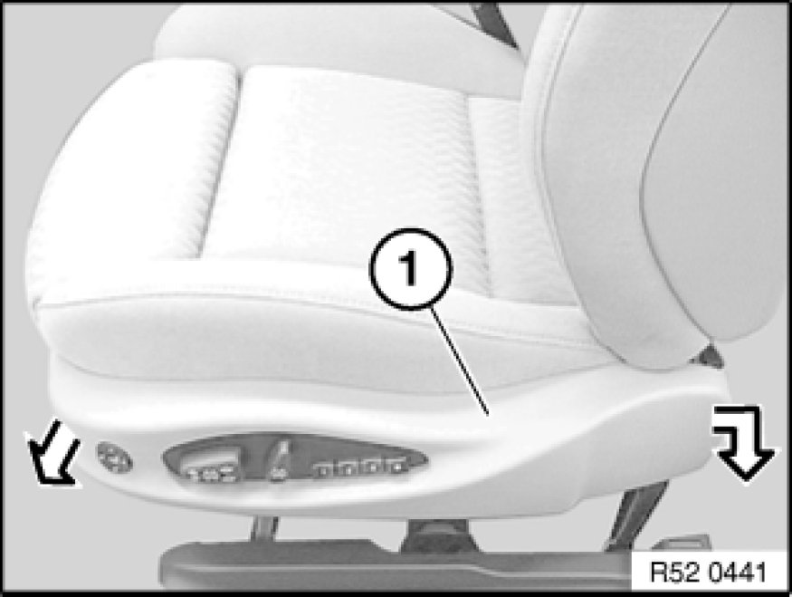

Removing and Installing/Replacing Outer Covers on Left or Right Front Seat (Sports/Electric)
52 16 040 - Removing and installing/replacing outer cover on front left or right seat (sports/electric)
Unscrew bolt (1).
Removing top cover:
A - Snap out catch (1) on front cover (2) towards bottom and
pull cover (2) outwards a little.
B - Snap out catch (3) on rear cover (2) towards front/bottom and
pull cover (2) outwards a little.
Lever lugs (1) on cover (3) out of brackets (2).

Lever out cover (1) at rear, detach at front from guide and remove.
Installation:
Do not crush cables (1) during installation.
Insert lugs (2) into mounts (3) and snap into place.
Disconnect plug connection (1).
Lever out lugs (2) and detach switch combination (3).
Installation:
Guides (1) and catches (2) on switch combination (3) must not be damaged.
Model with lumbar supports:
If necessary, expose cable (1) and disconnect plug connection (2).
Replacement only:
If necessary, press down catches (3) on left/right and
remove switch (4) from cover.
Installation:
Following parts must not be damaged,
replace cover (4) if necessary:
1. Mounts for switch combination
2. Guide, front
3. Tabs
Replacement of switch combination only or in event of further work on front seat:
Disconnect plug connection (1) and remove switch combination (2).